Alerta temprana al instante para salvaguardar la vida humana en recintos confinados.
SOSistem™ es un sistema de sensores y terminales (pantallas) de observación e información al momento, instalados en interiores y exteriores, para la seguridad humana. Lleva en tiempo real el conteo de personas dentro de cada recinto, como un inventario físico para evacuación y rescate; detecta sin cámaras a quien está caído o sin movimiento, alerta con luz, sonido y código Morse, y avisa en segundos al encargado, a la central de monitoreo y al 911.
Probar la terminal (versión de prueba) Ver cómo funciona
Masculino
Adultos 3/6Libre
Infantil 1/3Libre
Femenino
Adultas 4/6Libre
Infantil F‑2Caída
- R1 Sanitarios9
- R2 Oficina5
- R3 Cocina3
- R4 Bodega y taller6
- R0 Entrada4
- R0 Entrada3
- R2 Oficina4
- R3 Cocina✓
- R4 Bodega5
- Permanencia promedio38 min
- Temperatura27 °C
- Salida más cercanaA · 9 m
- Válvula de gasCerrada
- Personas en cocina2
- AvisoN1 encargado
- N0 Voz en cabina 2 s
- N1 Encargado 4 s
- N2 Central 7 s
- N3 911 · CAP 10 s
Todo lo que puede hacer el sistema, en breve.
Doce servicios para proteger la vida y sostener la operación.
SOSistem™ integra en una sola plataforma doce servicios de alerta temprana y gestión de ocupación: seis protegen directamente la vida de las personas y seis generan información para la toma de decisiones y la sostenibilidad financiera del servicio.
Contribuye a la meta G del Marco de Sendai para la Reducción del Riesgo de Desastres 2015-2030, a la iniciativa Alertas Tempranas para Todos de las Naciones Unidas y a los Objetivos de Desarrollo Sostenible 3 y 11.
Cadena de alerta y respuesta
- N0 Voz en cabina
- N1 Responsable
- N2 Central de monitoreo
- N3 911
- Cruz Roja
- Bomberos
- Protección Civil
- Autoridad y auditoría
La alerta a los servicios de emergencia (911) se emite solo con doble confirmación de sensores y mediante convenio con los centros C4/C5. El audio se procesa en el propio equipo, sin grabación ni transmisión de voz.
Sistema S.O.S.© · SOSistem™ · © Víctor Hugo Ramírez Salgado
Todo el sistema tiene un solo objetivo: salvar vidas.
Fortalezas, oportunidades, debilidades y amenazas de SOSistem™, con base en lo que el sistema ya hace y en lo que falta por medir en el piloto. Las pestañas Problema, Datos y Ventajas forman ahora parte de este análisis.
Matriz FODA
- Ve lo que nadie puede ver
- Ayuda en segundos, no en horas
- Funciona cuando todo falla
- Etapa piloto
- Evaluación de la conformidad en curso
- Costo inicial por equipo
- Alertas tempranas para todos
- Más caídas con el envejecimiento
- Obligación legal de prevenir
- Emergencias que nadie ve
- Sismos sin aviso previo
- Falsas alarmas
Fortalezas
Lo que el sistema ya aporta para salvar vidas- Ve lo que nadie puede verUn radar mmWave detecta a una persona en el piso o sin movimiento en sanitarios, vestidores y espacios confinados, donde no se permiten cámaras.
- Ayuda en segundos, no en horasLa alerta sube sola: voz en la cabina (N0), encargado (N1), central (N2) y 911 (N3) con mensaje CAP v1.2; el cliente fija los segundos de cada nivel.
- Aviso de sismo en el lugarAcelerómetros con confirmación cruzada avisan en todas las cabinas ocupadas, liberan las puertas y muestran la salida más cercana.
- Sabe quién faltaCuenta a las personas de cada recinto para que la brigada y los rescatistas sepan dónde sigue alguien dentro.
- Funciona cuando todo fallaBatería LiFePO4 para 30 días y enlace celular propio: sigue avisando sin luz y sin el internet del inmueble.
- Señales que todos entiendenColores de seguridad ISO 3864 y NOM-026, patrón de evacuación T-3, Morse, banderas y 22 idiomas: luz para quien no oye y sonido para quien no ve.
- Privacidad por diseñoSin imágenes ni audio grabado; solo estados y medidas. Por eso puede instalarse donde más se necesita.
- Experiencia que respalda el sistemaCreado por Víctor Hugo Ramírez Salgado, MBA (CETYS): más de 20 años en la operación portuaria mexicana; exsubgerente de Operaciones y Ecología de API Ensenada y presidente en turno de su Comité de Operación; coordinador del 1.er Simposio Nacional de Recintos Fiscalizados; formación internacional: diplomado en Operaciones, Tecnología y Gestión Ambiental en Puertos (Universidad de Cantabria–UIMP, Santander, España, 2014, 175 h), Logística del Contenedor (Fundación ValenciaPort, España, 2011) y Operations Management (Northwestern Polytechnical University, Xi’an, China, 2016); cursos marítimos (CEDEMAR: operación de buques y contenedorización; legislación portuaria) y de mercancías peligrosas (FIDENA y CANACINTRA: Código IMDG, SOLAS 74/78 y MARPOL 73/78); formación en ISO 9001 e ISO 14001. Cédulas profesionales 11197647 y 10392206; registro DGETI 6226780; CONOCER 01837017.
Oportunidades
Lo que el entorno ofrece- Alertas tempranas para todosLa iniciativa de la ONU busca que toda persona esté protegida por alertas tempranas; el Marco de Sendai (meta G) y los ODS 3 y 11 la respaldan.
- Cobertura sísmica limitada en Baja CaliforniaLas personas en recintos cerrados necesitan un aviso local que no dependa de la red pública.
- Más caídas con el envejecimientoLa OMS estima 684,000 muertes al año por caídas; las personas mayores son las más expuestas.
- Obligación legal de prevenirLa Ley Federal del Trabajo y las NOM de seguridad exigen medidas preventivas y aviso inmediato.
- Fondos de impacto socialFondos BC, BID, OEA y programas de la ONU apoyan proyectos de alerta temprana y protección civil.
- Mercados prioritariosRestaurantes, turismo médico, maquiladoras IMMEX, puertos, escuelas, hospitales y albergues.
Debilidades
Lo que debemos resolver- Etapa pilotoEl tiempo real de respuesta y el porcentaje de falsas alarmas se medirán en el piloto; no publicamos cifras sin medirlas.
- Evaluación de la conformidad en cursoSOSistem™ se somete a la evaluación de la conformidad ante organismos reguladores, de verificación y de certificación, nacionales e internacionales, conforme a las normas ISO, las Normas Oficiales Mexicanas, los reglamentos aplicables, los tratados internacionales y la legislación de cada país en el que se implemente.
- Enlace directo con el 911La conexión con el C5/911 requiere convenio con las autoridades de cada estado.
- Costo inicial por equipoCerca de USD 1,500 por equipo de calidad; se buscan proveedores y fondos para bajar el costo.
- Traducciones por revisarLos 22 idiomas requieren revisión de hablantes nativos antes de su uso institucional.
Amenazas
Los riesgos que el sistema enfrenta- Emergencias que nadie veUn desmayo, una caída o una crisis médica dentro de una cabina pueden pasar inadvertidos durante minutos.
- Sismos sin aviso previoQuien está en una cabina cerrada es el último en enterarse.
- Falsas alarmasSi saturan al 911 o al encargado, se pierde la confianza; por eso se exige doble confirmación de sensores.
- Percepción de vigilanciaAunque no hay cámaras, debe explicarse con claridad que no se graban imágenes ni voz.
- CompetenciaSensores domésticos de bajo costo y grandes marcas de seguridad.
- Fallas de red en desastresSe mitigan con batería, eSIM, SMS y, a futuro, enlace satelital.
Estrategias para salvar más vidas
Referencias del FODA
Origen del método: el FODA (en inglés, SWOT) proviene del enfoque SOFT que Robert F. Stewart desarrolló en el Stanford Research Institute en la década de 1960 (Puyt, Lie y Wilderom, 2023).
Vigencia: datos consultados y actualizados al 27 de octubre de 2026; se revisan en cada versión del sitio.
- Puyt, R. W., Lie, F. B., & Wilderom, C. P. M. (2023). The origins of SWOT analysis. Long Range Planning, 56(3), 102304. https://doi.org/10.1016/j.lrp.2023.102304
- Organización Mundial de la Salud. (2021, 26 de abril). Caídas [Nota descriptiva]. https://www.who.int/es/news-room/fact-sheets/detail/falls
- Instituto Nacional de Estadística y Geografía. (2026, 7 de agosto). Estadística de defunciones registradas (EDR) 2025: Información preliminar (Comunicado de prensa núm. 43/26). inegi.org.mx
- Naciones Unidas. (s. f.). Early Warnings for All. Recuperado el 27 de octubre de 2026, de un.org
- Oficina de las Naciones Unidas para la Reducción del Riesgo de Desastres. (2015). Marco de Sendai para la Reducción del Riesgo de Desastres 2015-2030. undrr.org
- Ley Federal del Trabajo, art. 994. diputados.gob.mx
Donde hay privacidad, nadie ve una emergencia a tiempo.
Minutos sin ayuda
Un desmayo, una caída o una crisis médica dentro de una cabina pueden pasar inadvertidos, porque nadie puede vigilar ese espacio.
Cámaras, imposibles
En sanitarios y vestidores no se pueden instalar cámaras. Los botones de pánico solo sirven si la persona puede usarlos.
Sismos sin aviso
En Baja California, la alerta sísmica pública no tiene cobertura. Las personas en cabinas cerradas son las últimas en enterarse.
El tamaño del riesgo, con cifras oficiales.
Exposición del patrón en 2026
La Ley Federal del Trabajo (art. 994, fr. V) sanciona con 250 a 5,000 UMA a quien no observe las normas de seguridad e higiene. Con la UMA 2026 de $117.31, eso equivale a $29,327.50 a $586,550.00 MXN por infracción.
El tiempo de respuesta real de S.O.S.© es un indicador que se medirá en el piloto; no publicamos cifras sin medirlas.
- Instituto Nacional de Estadística y Geografía. (2025). Estadística de defunciones registradas (EDR) 2024 [Comunicado de prensa]. https://www.inegi.org.mx/contenidos/saladeprensa/boletines/2025/edr/EDR2024-def_CP.pdf
- Instituto Nacional de Estadística y Geografía. (2026, 7 de agosto). Estadística de defunciones registradas (EDR) 2025: Información preliminar (Comunicado de prensa núm. 43/26). https://www.inegi.org.mx/contenidos/saladeprensa/boletines/2026/edr/EDR2025_CP.pdf
- Instituto Nacional de Estadística y Geografía. (2026, 9 de enero). Unidad de Medida y Actualización (UMA) 2026. https://www.inegi.org.mx/temas/uma/
- Organización Mundial de la Salud. (2021, 26 de abril). Caídas [Nota descriptiva]. https://www.who.int/es/news-room/fact-sheets/detail/falls
Escalamiento automático en cuatro niveles.
Un nodo en cada cabina detecta si hay una persona, su postura y si se mueve. Si detecta riesgo sostenido, la estación central escala la alerta hasta que alguien responde.
Tiempos de la versión 1.0.0, configurables por recinto; para menores de edad se reducen a la mitad. Se calibran en el piloto.
Una sola plataforma, de un celular a todo un inmueble.
SOSistem™ funciona en dos modalidades y se muestra en las pantallas que el cliente ya tiene. Los sensores se instalan según la necesidad de cada cliente.
Modalidad rápida · celulares
Cualquier celular funciona como terminal con sus propios sensores de movimiento, sonido y ubicación. Es la forma más rápida, funcional y operativa de empezar: sin instalación, para pruebas, eventos temporales o emergencias.
Modalidad principal · sensores fijos
Sensores instalados en cabinas, sanitarios, recintos confinados y espacios de trabajo, con pantallas S.S.O.S.© fabricadas para cada lugar. Es la operación permanente del sistema.
Pantallas: también las que usted ya tiene
La información se ve en pantallas S.S.O.S.©, iPad y tabletas, celulares, computadoras y monitores de oficina, con un módulo lector conectado al sistema.
Administración en dos niveles
Un administrador principal y uno secundario (director general, director de operaciones o encargado de seguridad) tienen las mismas facultades: autorizar los módulos de instalación, de vista y de lectura de cada recinto en sus pantallas.
Sensores a la medida del cliente
Se instalan y adquieren según la necesidad del cliente principal: el paquete completo, con todos los niveles de lectura del sistema, o solo los sensores básicos que elija.
- Humo
- Gas
- Movimiento
- Nivel de sonido
- Calor
- Frío
- Oxígeno
- Hidrógeno
- Monóxido de carbono
- Agua en el piso
- Vibración y sismo
- Inventario de personas
- Tiempo promedio de permanencia del personal
- Masa y peso
- Volumen y espacio (m³)
- Capacidad mínima y máxima
Paquete completo: todos los niveles de lectura del sistema · Paquete básico: los sensores que el cliente elija.
Diseñado para lugares donde otros sistemas no pueden entrar.
Privacidad total
Radar y sensores de distancia: sin imágenes, sin audio grabado. Las medidas se usan al momento y no se guardan.
Alerta sísmica en sitio
Acelerómetros con confirmación cruzada detectan la onda P, abren cerraduras y avisan en todas las cabinas ocupadas.
Conteo de evacuación
Sabe cuántas personas entraron, cuántas salieron y en qué zona falta alguien. La brigada lo ve en pantalla.
Estándar internacional
Alertas en formato CAP v1.2 (OASIS), el mismo que usan los sistemas oficiales de emergencia.
30 días sin luz
Bus de 12 V con banco LiFePO4 de 250 Ah: 3.2 W × 720 h = 2,304 Wh. Un circuito NiMH de respaldo mantiene reloj, memoria y sirena.
Riesgos ambientales
Versión S2: humo, fuego, amoniaco, falta de oxígeno, hidrógeno, agua en el piso y la palabra «S.O.S.».
¿En qué se distingue de un sensor doméstico?
Ya existen sensores mmWave de consumo con detección de caídas que avisan a una app del hogar. S.O.S.© está hecho para recintos públicos y centros de trabajo: escala la alerta hasta el 911 con mensaje CAP v1.2 y llamada SIP, opera 30 días sin red eléctrica y muestra la señal de ocupación y emergencia con los colores de seguridad de la NOM-026-STPS-2008.
La señal de «ocupado» se convierte en un nodo salvavidas.
Pantalla micro-LED en el acceso y sensores de radar en cada sanitario. Si alguien queda en el piso, la pantalla cambia a rojo, suena la sirena y la alerta sale hacia el encargado y el 911.
Pantallas por tipo de recinto
| Entorno | Aforo | Medidas | Pitch | Luminancia | Protección |
|---|---|---|---|---|---|
| Interior: restaurantes y baños | Hasta 100 p. | 60 × 60 cm | 4.0 mm | ≥ 1,200 cd/m² | IP65 / IK08 |
| Interior: naves industriales | 101 a 499 p. | 70 × 70 cm | 5.0 mm | ≥ 1,200 cd/m² | IP65 / IK08 |
| Exterior: acceso primario (Fase 1) | — | 40 × 40 cm | 3.0 mm | ≥ 5,500 cd/m² | IP67 / IK09 |
| Exterior: fachada o vialidad (Fase 2) | — | 50 × 50 cm | 3.5 mm | ≥ 6,500 cd/m² | IP67 / IK09, niebla salina |
Rojo: emergenciaÁmbar: precaución / aforo > 90 %Verde: libre
Así se ve un evento en la pantalla de acceso.
Elija un estado para ver cómo cambia la señal. Los colores siguen la NOM-026-STPS-2008; el rojo parpadea a 2 Hz, por debajo del umbral de riesgo fotosensible de 3 Hz. El fondo se adapta a la luz del lugar: claro con mucha luz, oscuro y atenuado de noche, o de alto contraste.
El sonido Morse solo se emite en advertencias, emergencias, desastres naturales o pruebas autorizadas. Aquí es una prueba: actívela para escucharlo.
Conceptos de segregación del área
Colores por falla
Toque un color para cambiarlo. Cada falla debe conservar su familia de color de seguridad (ISO 3864-1 y NOM-026-STPS-2008); si el tono sale de la familia o pierde contraste, se marca en ámbar. Los cambios se guardan en este equipo.
Códigos de color
| Color | Uso | HEX | RGB | RAL | Luz LED |
|---|
Módulo masculino
Módulo femenino
Cómo entender el código Morse de la pantalla
Cada letra es una combinación de puntos (tono corto) y rayas (tono largo, tres veces un punto). Entre las señales de una letra hay una pausa corta; entre letras, una pausa de tres puntos, y entre palabras, una de siete. La pantalla emite un tono de 650 Hz a 15 palabras por minuto y, al mismo tiempo, destella con el color de la alerta.
·– ···– ·· ··· –––AVISO · luz ámbar · permanencia > 10 min o aforo > 90 %··· ––– ··· / ··· ––– ···SOS dos veces · luz roja a 2 Hz··· ––– ··· / ··· ·· ··· –– ––– / ··· ––– ···SOS · SISMO · SOS · luz blanca de evacuaciónAlfabeto Morse internacional (sin acentos):
Versión mejorada de los renders de referencia: textos legibles, unidades corregidas (antes mezclaban RGB con nanómetros) y aviso al C5/911, que es la central que opera en Baja California.
Así se ven hoy las pantallas del sistema.
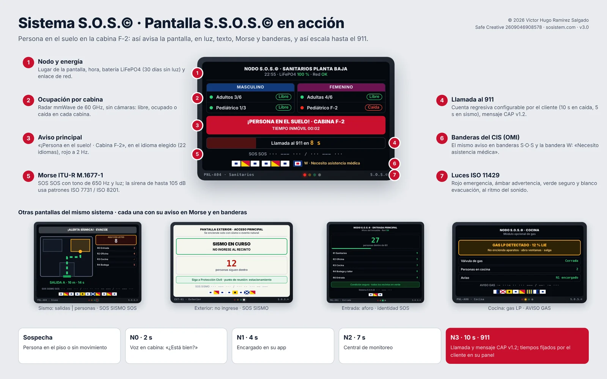
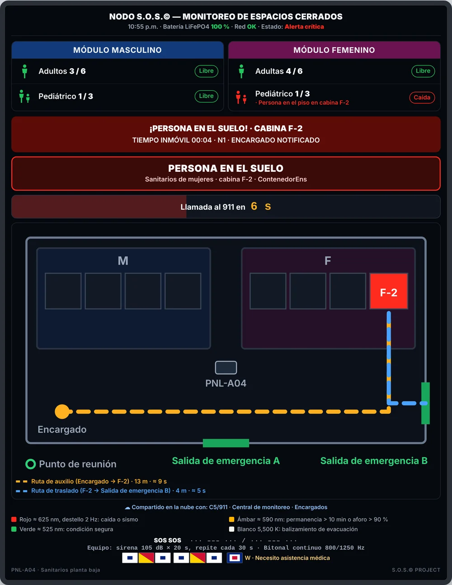
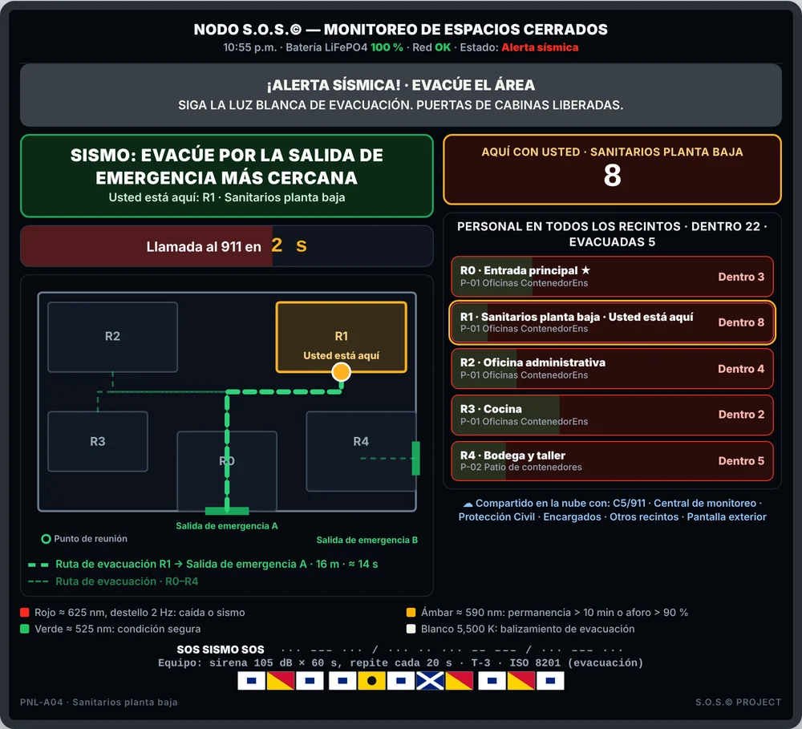
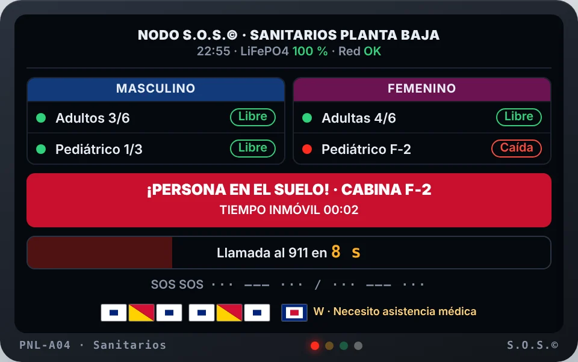
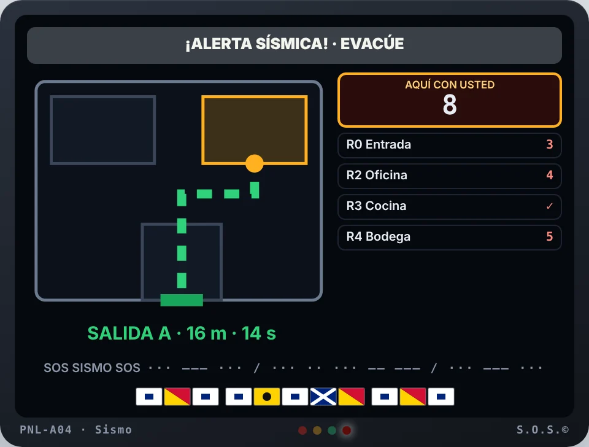
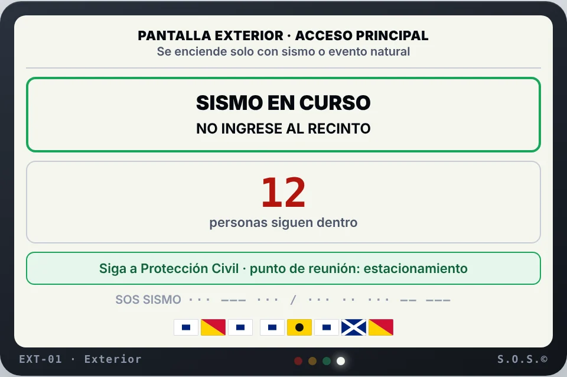
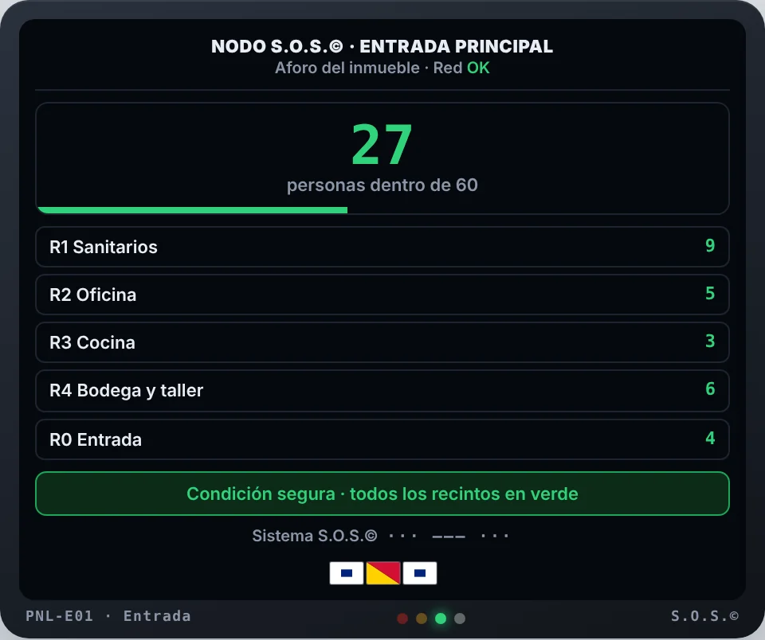
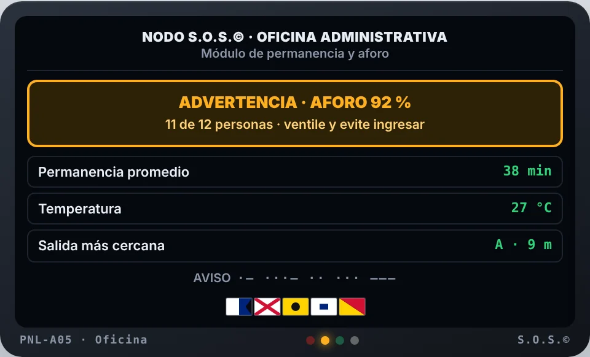
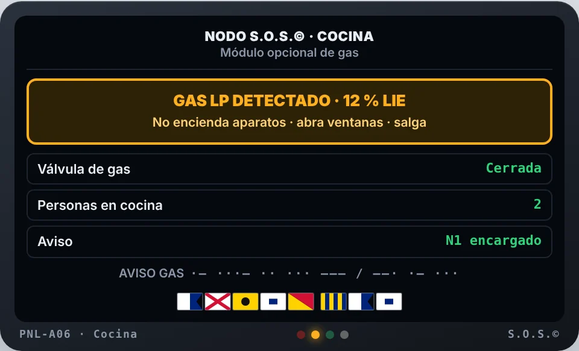
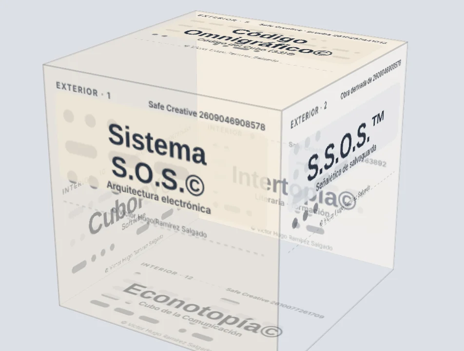
Conceptos originales (renders de referencia)
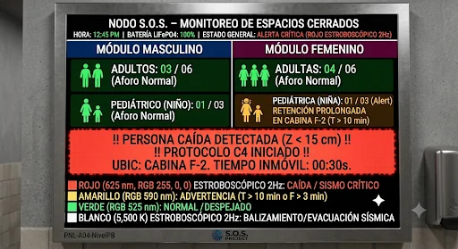

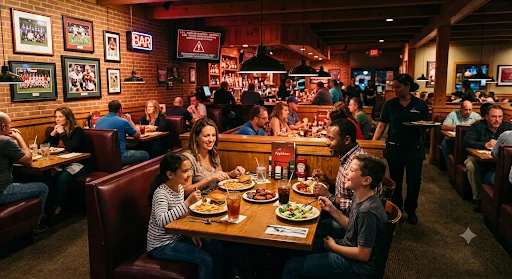
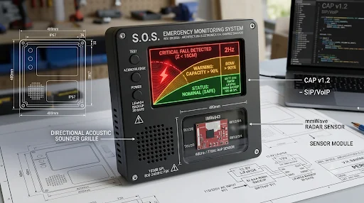
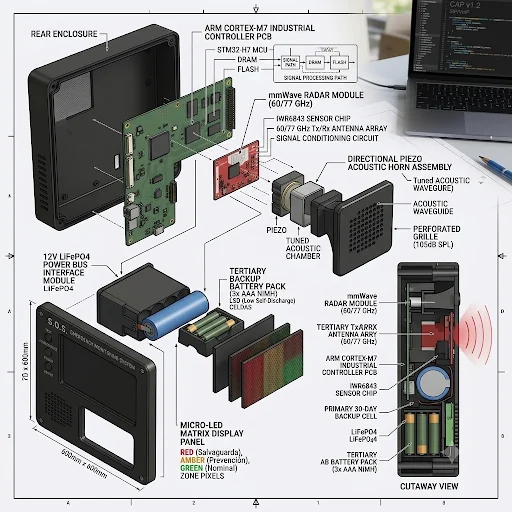
Nota sobre los renders
Son ilustraciones conceptuales. Rótulos y cotas son aproximados: la especificación vigente está en la sección Módulo S.S.O.S.© (pantalla interior de 60 × 60 cm; exterior de 40 × 40 o 50 × 50 cm).
© Víctor Hugo Ramírez Salgado.
Un cubo, doce caras, un solo código.
El logo de S.O.S.™ es un cubo escrito en código Morse internacional: cada cara es un proyecto de la misma familia. El punto y la raya se leen igual impresos, en pantalla o con una luz que parpadea.
Por fuera, las obras de identidad y código (Sistema S.O.S.©, S.S.O.S.™, Código Cúbico©, Cubo Interior©, Código Omnigráfico©, Cubo Morse©); por dentro, las empresas y proyectos (ContenedorEns©, Arsa Bodegas©, Intertopía©, CuboPY©, 1ntertopía©, Econotopía©). El exterior es una marca de agua al 50 %: abajo se lee la cara de fuera y arriba se alcanza a ver la cara interior de la pared de enfrente. Toque una cara para escucharla en Morse.
Exterior
Interior
Descargar cubo para armar (PDF carta)
Código Cúbico© y Cubo 33© van en Morse en la banda del cubo impreso. El Morse internacional no lleva acentos.
Pensado para cumplir, no para sustituir.
| Norma o ley | Qué exige | Cómo ayuda S.O.S.© |
|---|---|---|
| NOM-026-STPS-2008 | Colores y señales de seguridad e higiene. | Pantalla con colores de seguridad según su significado normativo. |
| NOM-002-STPS-2010 | Prevención y protección contra incendios. | Complementa la alarma y la señal de evacuación; no sustituye detectores certificados. |
| NOM-033-STPS-2015 | Trabajos en espacios confinados. | Monitoreo de «hombre caído» en cuartos técnicos, cisternas y fosas, dentro del plan de rescate. |
| Ley Federal del Trabajo | Seguridad e higiene y primeros auxilios (arts. 132, 504 y 994). | Evidencia de medidas preventivas y aviso inmediato. |
| LFPDPPP 2025 | Protección de datos personales; autoridad: Secretaría Anticorrupción y Buen Gobierno. | Sin cámaras ni grabación; aviso de privacidad y retención mínima de eventos. |
| Ley en Materia de Telecomunicaciones y Radiodifusión | Homologación de equipos de radio ante la Comisión Reguladora de Telecomunicaciones. | Módulos de radio y conectividad ya homologados. |
| CAP v1.2 (OASIS) · SIP (RFC 3261) | Formatos estándar de alerta y voz. | La alerta llega estructurada: qué pasó, dónde y con qué urgencia. |
Cada sonido, luz, color y código del sistema sigue una norma internacional.
S.O.S.© usa señales que cualquier persona, brigada o tripulación reconoce sin entrenamiento previo: el patrón de evacuación T-3, la alarma general de los buques, el código Morse internacional y las banderas del Código Internacional de Señales.
| Norma | Qué establece | Cómo la aplica S.O.S.© |
|---|---|---|
| ISO 7010:2019 Señales de seguridad registradas · con Amd. 1–11 (Amd. 11:2026) | Catálogo internacional de señales de seguridad con su pictograma, color y forma: salvamento y evacuación (E, verde), protección contra incendios (F, rojo), obligación (M, azul), prohibición (P, rojo) y advertencia (W, amarillo). | Pantallas, luces y botones usan esos colores según el estado; la señalética física del recinto usa los pictogramas registrados, como E001/E002 salida de emergencia, E003 primeros auxilios, E007 punto de reunión y W001 advertencia general. Nueva edición en preparación (ISO/DIS 7010). |
| ISO 3864-1:2011 Principios de diseño de señales y marcas de seguridad · confirmada en 2022 | Define los colores de seguridad, sus colores de contraste y las formas geométricas: círculo con banda diagonal para prohibición, círculo para obligación, triángulo para advertencia y cuadrado o rectángulo para condición segura y equipo contra incendio. | Cada estado tiene un solo par de colores: rojo con blanco (emergencia), amarillo con negro (advertencia), verde con blanco (seguro) y azul con blanco (información); colorimetría de referencia en ISO 3864-4 (RAL 3001, 1003, 6032 y 5005). |
| ISO 3864-3:2024 Diseño de símbolos gráficos para señales de seguridad · 3.ª ed., sustituye a la de 2012 | Reglas para dibujar pictogramas de seguridad: área del símbolo, grosor de trazo, figura humana normalizada y legibilidad a distancia. | Los símbolos propios de S.O.S.© (persona en el suelo, sismo y aforo) se dibujan con estas reglas; no son señales registradas en ISO 7010 y se identifican como símbolos del sistema. |
| ISO 7731:2003 Señales auditivas de peligro | La señal debe ser audible, identificable e inconfundible: al menos 15 dB por encima del ruido de fondo en toda la zona y tonos principales entre 500 y 1500 Hz. | Sirena bitonal 800/1250 Hz y Morse a 650 Hz. El panel pide el ruido medido en cada recinto y marca ✓ si la sirena lo supera en 15 dB o más, y ✗ si no. |
| ISO 8201:2017 Señal de evacuación | Patrón temporal T-3: 0.5 s sonido, 0.5 s silencio, tres veces, y 1.5 s de pausa (ciclo de 4 s); equivalente al de NFPA 72. | Patrón por defecto en sismo y evacuación; la luz blanca destella al mismo ritmo. |
| ISO 11429:1996 Señales sonoras y visuales (confirmada en 2014) | Sistema de señales de peligro e información según el grado de urgencia, con sonido y luz coherentes entre sí. | Cada estado tiene un solo par sonido-luz: rojo en emergencia, ámbar en advertencia, verde seguro y blanco de evacuación (NOM-026-STPS-2008); la luz sigue el mismo ritmo que el sonido. |
| SOLAS, cap. III, regla 34 · Código IDS (LSA) 7.2.1 OMI | Alarma general de emergencia en buques: siete o más pitadas cortas y una larga. | Patrón opcional «SOLAS» para recintos portuarios y a bordo (propuesta Puerto de Ensenada, previa autorización). |
| Código de Alertas e Indicadores, 2009 OMI, res. A.1021(26) | Prioridades, colores y señales visuales y sonoras de alarmas a bordo. | Referencia para las pantallas instaladas en buques o terminales. |
| ITU-R M.1677-1 (2009) Código Morse internacional | Alfabeto Morse; la raya dura 3 puntos; espacios de 1 punto entre señales, 3 entre letras y 7 entre palabras. | Motor Morse a 15 palabras por minuto (punto ≈ 80 ms), con luz y sonido. |
| ISO/IEC 646:1991 Caracteres de 7 bits | Conjunto básico de letras, cifras y signos para intercambio de información. | Los avisos se normalizan a mayúsculas sin acentos antes de pasarlos a Morse y a banderas. |
| Código Internacional de Señales OMI, res. A.80(IV) | Banderas A–Z con significado de una letra (p. ej. O: hombre al agua; V: necesito auxilio; W: necesito asistencia médica). | La pantalla muestra la bandera que corresponde al evento: W en persona caída y V si se pide auxilio. |
| ISO 639-3 Códigos de lenguas | Identifica cada lengua de señas: mfs Lengua de Señas Mexicana, ssp Lengua de Signos Española, ase Lengua de Señas Americana, ils Señas Internacionales. | Base para el futuro selector de lengua de señas por país. |
| Convención sobre los Derechos de las Personas con Discapacidad ONU, arts. 2, 9, 21 y 24 | Reconoce las lenguas de señas y obliga a dar información accesible. | Avisos con luz, texto, Morse y sonido; lengua de señas en desarrollo. |
Aclaración: la ISO 8384 corresponde a «Buques y tecnología marina — Dragas — Vocabulario»; las señales visuales a bordo se rigen por el Código de Alertas e Indicadores de la OMI. Las lenguas de señas no tienen una norma ISO: cada país tiene la suya.
Escuche los patrones
Módulo de pruebas: suena solo al tocar, con volumen bajo. En el equipo real la sirena llega a 105 dB.
Su mensaje en banderas y Morse
Banderas del Código Internacional de Señales (A–Z)
- International Organization for Standardization. (1991). Information technology — ISO 7-bit coded character set for information interchange (ISO/IEC 646:1991). https://www.iso.org/standard/4777.html
- International Organization for Standardization. (1996). Ergonomics — System of auditory and visual danger and information signals (ISO 11429:1996; confirmada en 2014). https://www.iso.org/standard/19369.html
- International Organization for Standardization. (2003). Ergonomics — Danger signals for public and work areas — Auditory danger signals (ISO 7731:2003). https://www.iso.org/standard/33590.html
- International Organization for Standardization. (2017). Acoustics — Audible and other emergency evacuation signals (ISO 8201:2017). https://webstore.ansi.org/standards/iso/iso82012017
- International Organization for Standardization. (2018). Ships and marine technology — Dredgers — Vocabulary (ISO 8384:2018). https://www.austrian-standards.at/de/shop/iso-8384-2018-2018-08-10~p2400991
- International Telecommunication Union. (2009). International Morse code (Recommendation ITU-R M.1677-1). https://www.itu.int/rec/R-REC-M.1677-1-200910-I/
- Organización Marítima Internacional. (1965). Código Internacional de Señales (Resolución A.80(IV); edición vigente 2005).
- Organización Marítima Internacional. (1996). Código internacional de dispositivos de salvamento (Código IDS) (Resolución MSC.48(66)), párr. 7.2.1; Convenio SOLAS 1974, cap. III, regla 34.
- Organización Marítima Internacional. (2009). Código de alertas e indicadores, 2009 (Resolución A.1021(26)). https://wwwcdn.imo.org/localresources/en/KnowledgeCentre/IndexofIMOResolutions/AssemblyDocuments/A.1021(26).pdf
- Organización de las Naciones Unidas. (2006). Convención sobre los Derechos de las Personas con Discapacidad. https://www.un.org/esa/socdev/enable/documents/tccconvs.pdf
- SIL International. (s. f.). ISO 639-3 code tables [mfs, ssp, ase, ils]. https://iso639-3.sil.org/
- Flags of the World. (s. f.). International Code of Signals. https://crwflags.com/fotw/flags/xf-ics.html
Aprenda a pedir ayuda de cinco maneras.
En una emergencia, no todas las personas pueden oír, ver o hablar. Aquí puede aprender y practicar el código Morse, el braille, las banderas del Código Internacional de Señales y la lengua de señas.
Lengua de Señas Mexicana (LSM)
La LSM es la lengua de la comunidad sorda en México (código ISO 639-3: mfs). Aquí se muestra su abecedario manual, con el que se deletrean nombres y palabras; las letras J, K, Ñ, Q, X y Z llevan movimiento. La lengua completa se aprende con videos y con personas sordas: le recomendamos los diccionarios oficiales.
- Diccionario de Lengua de Señas Mexicana (SEP, Educación Especial)
- Diccionario de LSM de la Ciudad de México (CDHCM)
Abecedario: Secretaría de Educación Pública y Aprende.mx. Módulo de lengua de señas en las pantallas: en desarrollo (LSM y ASL).
Braille
Braille en español (Comisión Braille Española): seis puntos por celda; los números llevan antes el signo de número ⠼.
Morse internacional (UIT-R M.1677-1): el punto es corto y la raya dura tres puntos.
Alfabeto fonético internacional (OACI/OTAN), el que usan radio marítima y aeronáutica para deletrear sin errores.
El alfabeto en cinco sistemas
| Letra | Morse | Braille | Bandera | Fonético | LSM |
|---|
Mensajero del Cubo
Escriba un mensaje y conviértalo en Código de comunicación del Cubo (33)©, o pegue un código recibido para leerlo. Todo se procesa en este equipo: no se guarda ni se envía nada.
Enviar
Recibir
Es un código de comunicación para leer y compartir, no un cifrado de seguridad. Su lectura por cámara (Código Cúbico©) queda para una interfaz futura.
Su celular escucha el código Morse y lo convierte en texto.
Capta por el micrófono la señal de una radio, de otro teléfono o de una sirena; también lee grabaciones y lo que usted teclee con el dedo. Si recibe «SOS», muestra un aviso rojo y vibra.
Micrófono
Detecta solo el tono (300–1300 Hz) y la velocidad (5–40 palabras por minuto), aunque haya ruido.
Grabaciones
Abra una nota de voz o un archivo WAV, MP3 o M4A y obtenga el texto.
Con el dedo
Mantenga presionado el recuadro para enviar Morse; se traduce al instante.
Herramienta de prueba: el audio se procesa en el propio equipo, sin grabarse ni enviarse. No sustituye al 911.
- Goertzel, G. (1958). An algorithm for the evaluation of finite trigonometric series. The American Mathematical Monthly, 65(1), 34–35. https://doi.org/10.2307/2310304
- International Telecommunication Union. (2009). International Morse code (Recommendation ITU-R M.1677-1). https://www.itu.int/rec/R-REC-M.1677-1-200910-I/
- World Wide Web Consortium. (2021). Web Audio API (W3C Recommendation). https://www.w3.org/TR/webaudio/
- World Wide Web Consortium. (s. f.). Media Capture and Streams (W3C Candidate Recommendation). https://www.w3.org/TR/mediacapture-streams/
Recintos con cabinas, espacios confinados y alto flujo de personas.
Puertos y aduanas
Sanitarios de acceso, casetas y oficinas operativas.
Gobierno
Oficinas de atención al público y edificios administrativos.
Transporte y comercio
Centrales de autobuses, gasolineras y plazas comerciales.
Industria
Vestidores, espacios confinados y minibodegas.
Prototipo y prueba real en las oficinas de ContenedorEns©.
- Prototipo. Armado, calibración de umbrales y bitácora de pruebas en las oficinas de ContenedorEns©, Ensenada.
- Prueba real. Operación continua del sistema en los sanitarios de las oficinas de ContenedorEns©, con personal y visitantes reales.
- Medición. Tiempo de respuesta, falsas alarmas, disponibilidad y satisfacción del personal.
- Validación. Reporte de resultados y propuesta comercial para otros recintos.
Modelo de servicio
Equipo instalado por recinto, más servicio mensual de monitoreo, mantenimiento y reportes estadísticos por evento, con fecha, hora, minuto y segundo.
Cada cliente recibe su panel con indicadores: alertas por nivel, tiempos de respuesta, porcentaje de error del sistema y disponibilidad.
Paquete de referencia para restaurante: pantalla maestra de 60 × 60 cm, dos sensores de radar (sanitarios de hombres y mujeres), herrajes antivandálicos, instalación nocturna y calibración. Precio de referencia USD 1,667.50 (≈ $31,183 MXN al FIX de Banxico del 23-oct-2026), más servicio de monitoreo de USD 35 al mes. Precios sin IVA; cotización final por recinto.
El piloto está en gestión. Las cifras se publicarán al concluir.
Su celular como terminal del sistema.
Instale la app SOSistem™ Terminal y use su celular como punto de prueba: lee el acelerómetro, el giroscopio, el micrófono y la ubicación, detecta caídas, vibración tipo sismo, ruido fuerte y la palabra «S.O.S.», y escala la alerta por niveles N0–N3 como la pantalla física.
Abierta a todo el público, sin registro.
La terminal es una versión de prueba de SOSistem™. Cualquier persona puede descargarla y usarla para conocer el sistema; no pedimos nombre, correo ni teléfono. No es el sistema terminado: no está lista para operar, instalar ni aplicarse como medio de protección en ningún recinto, y no sustituye al 911 ni a los sistemas oficiales de alerta.
Sus pruebas y comentarios son bienvenidos y nos ayudan a mejorarla. Si desea acelerar el desarrollo del equipo físico para salvar vidas, puede apoyar el proyecto con una aportación voluntaria.
El uso de la terminal implica la aceptación de los Términos de uso de la versión de prueba. El uso indebido —falsas alarmas a servicios de emergencia, acceso no autorizado, copia o distribución del código— puede dar lugar a acciones legales.
Conteo anónimo por equipo: no identifica a nadie, no usa cookies y se actualiza con cada uso.
Sensores en vivo
Movimiento, orientación, nivel de sonido, batería, red y datos técnicos del equipo.
Eventos con estadística
Cada evento queda con hora al milisegundo, nivel alcanzado y tiempo de respuesta; al marcarlo como válido o falsa alarma se calcula el porcentaje de error.
Sus datos, en su cuenta
Todo se guarda en el celular. Puede exportarlo en CSV o JSON, o enviarlo a su repositorio privado de GitHub.
En iPhone: Safari → Compartir → «Agregar a pantalla de inicio». En Android: Chrome → «Instalar app».
Herramienta de prueba: no es un dispositivo médico ni sustituye al 911. Términos de uso.
Escanee con su celular para abrir la terminal.
Conexión para pedir auxilio donde no hay señal.
El fondo convierte aportaciones en conexión para el sistema S.O.S.: estaciones, puertas de enlace y antenas comunitarias que transmiten alertas desde lugares sin cobertura en desastres naturales y emergencias personales.
Alerta por mensaje de texto
Enviar «SOS» por SMS funciona con señal mínima y sin datos móviles.
Puertas de enlace donadas
Un teléfono o una estación con internet retransmite al panel y al 911 las alertas de su zona, sin compartir el internet de su dueño.
Red en malla sin internet
Nodos de radio LoRa en bandas libres enlazan alertas de texto de 2 a 5 km por nodo.
Bolsa de datos del fondo
SIM para dispositivos con datos compartidos mantienen conectadas las estaciones; el crédito queda en la cuenta del fondo.
Antena satelital por refugio
Una antena en espera se activa con el fondo durante un desastre y da conexión a todo el refugio.
SOS satelital del teléfono
Los teléfonos compatibles envían mensajes de emergencia por satélite sin cobertura celular.
Cómo apoyar
- Dona dinero: todo va al fondo, con entradas y salidas publicadas.
- 10 % solidario: el 10 % de cada servicio contratado con SOSistem™ se destina al fondo.
- Dona megas o recargas directamente al número de un beneficiario registrado, desde la aplicación de tu compañía telefónica.
- Dona tu conexión: registra tu teléfono como puerta de enlace para alertas de tu zona.
- Dona un comunicador satelital: botón SOS con GPS y suscripción pagada por el fondo, para personas o refugios sin señal ni saldo.
Las metas por comunidad y su avance se publican en esta sección.
Quiero aportar · escribir por WhatsApp
Las aportaciones son un apoyo voluntario a un proyecto privado y no son deducibles de impuestos. El fondo compra conexión para el equipo de emergencia; no revende internet.
Ayúdenos a instalar el primer prototipo.
SOSistem™ es un proyecto independiente de seguridad humana. Su aportación financia el prototipo físico y la prueba real en las oficinas de ContenedorEns©: radares mmWave, pantallas, batería LiFePO4 y enlace celular.
Las aportaciones son un apoyo voluntario a un proyecto privado; no son donativos deducibles de impuestos. El avance de la meta se actualiza en esta sección.
0 % de la meta
Quiero apoyar · escribir por WhatsApp
Patrocinios en línea en activación (GitHub Sponsors).
Pendientes por autorizar
Cada renglón dice qué es, dónde va (espacio) y qué cambia (modificación). Marque Autorizar, Con cambios o No; se guarda en este equipo. Al terminar, pulse «Enviar autorizaciones al sistema»: quedan guardadas en el repositorio y lo autorizado pasa al sitio oficial (módulo principal).
| # | Pendiente | Espacio | Modificación | Estado | Decisión |
|---|
Historial de cambios · renglones resueltos (no se borran)
| # | Cambio | Espacio | Estado | Resolución |
|---|
Constancia de reconocimiento para quien aporta
Llene los datos, revise la vista previa y pulse «Imprimir o guardar PDF». Cada constancia lleva folio, código QR y el Código Cúbico© (código de barras del Código de comunicación del Cubo (33)©) que se verifica en sosistem.com/verificar.html. Para que el QR la valide, regístrela en el sistema.
Hablemos de salvar vidas: tener para dar.
Le mostramos el simulador, las pantallas y el panel de estadísticas con datos de prueba, y evaluamos su recinto sin costo.
SOSistem™ en cifras para el mundo.
Sensores y terminales (pantallas) de observación e información al momento que detectan sin cámaras a una persona en el suelo, un sismo o una fuga de gas, y escalan la alerta hasta el 911. El resumen presenta el reto mundial, dónde puede operar el sistema, su impacto y su hoja de ruta, con cifras oficiales en formato APA 7.ª ed.
Descargar el resumen ejecutivo global (PDF) Presentación para banca de desarrollo (PDF, 3 hojas)
Incluye índice, escenarios de adopción calculados a partir de cifras oficiales y referencias completas. Se actualiza con cada versión del sistema.
Referencias (APA 7.ª ed.)
- Banco de México. (2026, 23 de octubre). Tipos de cambio diarios (CF102). banxico.org.mx
- Instituto Nacional de Estadística y Geografía. (2025). Estadística de defunciones registradas (EDR) 2024 [Comunicado de prensa]. https://www.inegi.org.mx/contenidos/saladeprensa/boletines/2025/edr/EDR2024-def_CP.pdf
- Instituto Nacional de Estadística y Geografía. (2026, 7 de agosto). Estadística de defunciones registradas (EDR) 2025: Información preliminar (Comunicado de prensa núm. 43/26). https://www.inegi.org.mx/contenidos/saladeprensa/boletines/2026/edr/EDR2025_CP.pdf
- Instituto Nacional de Estadística y Geografía. (2026, 9 de enero). Unidad de Medida y Actualización (UMA) 2026. https://www.inegi.org.mx/temas/uma/
- Organización Mundial de la Salud. (2021, 26 de abril). Caídas [Nota descriptiva]. https://www.who.int/es/news-room/fact-sheets/detail/falls
- International Organization for Standardization. (2011). Graphical symbols — Safety colours and safety signs — Part 1: Design principles for safety signs and safety markings (ISO Standard No. 3864-1:2011; confirmada en 2022). https://www.iso.org/standard/51021.html
- International Organization for Standardization. (2024). Graphical symbols — Safety colours and safety signs — Part 3: Design principles for graphical symbols for use in safety signs (ISO Standard No. 3864-3:2024). https://www.iso.org/standard/86048.html
- International Organization for Standardization. (2019). Graphical symbols — Safety colours and safety signs — Registered safety signs (ISO Standard No. 7010:2019). https://www.iso.org/standard/72424.html
- International Organization for Standardization. (2026). Graphical symbols — Safety colours and safety signs — Registered safety signs — Amendment 11 (ISO Standard No. 7010:2019/Amd 11:2026). https://www.iso.org/standard/93739.html
- Ley Federal de Protección de Datos Personales en Posesión de los Particulares. (2025). Diario Oficial de la Federación, 20 de marzo de 2025. diputados.gob.mx
- Ley Federal del Trabajo, art. 994. diputados.gob.mx
- Secretaría de Educación Pública y Aprende.mx. (s. f.). Abecedario en Lengua de Señas Mexicana [Infografía]. Nueva Escuela Mexicana Digital.
- Secretaría del Trabajo y Previsión Social. (2008). NOM-026-STPS-2008. dof.gob.mx
- Secretaría del Trabajo y Previsión Social. (2010). NOM-002-STPS-2010. economia.gob.mx
- Secretaría del Trabajo y Previsión Social. (2015). NOM-033-STPS-2015. dof.gob.mx
- Naciones Unidas. (2015). Transformar nuestro mundo: la Agenda 2030 para el Desarrollo Sostenible (A/RES/70/1). un.org
- Naciones Unidas. (s. f.). Early Warnings for All. Recuperado el 25 de octubre de 2026, de un.org
- Oficina de las Naciones Unidas para la Reducción del Riesgo de Desastres. (2015). Marco de Sendai para la Reducción del Riesgo de Desastres 2015-2030. undrr.org
- OASIS. (2010). Common Alerting Protocol Version 1.2. oasis-open.org
- Rosenberg, J., et al. (2002). SIP: Session Initiation Protocol (RFC 3261). rfc-editor.org
- International Organization for Standardization. (2023). Code for individual languages and language groups (ISO Standard No. 639:2023). https://www.iso.org/standard/74575.html
- Phillips, A., & Davis, M. (Eds.). (2009). Tags for identifying languages (BCP 47, RFC 5646). https://www.rfc-editor.org/rfc/rfc5646
- Unicode Consortium. (s. f.). Unicode Common Locale Data Repository (CLDR). Recuperado el 27 de octubre de 2026, de https://cldr.unicode.org
- Eleos Compliance. (2025, 20 de octubre). Mexico’s IFT ceases operations. eleoscompliance.com